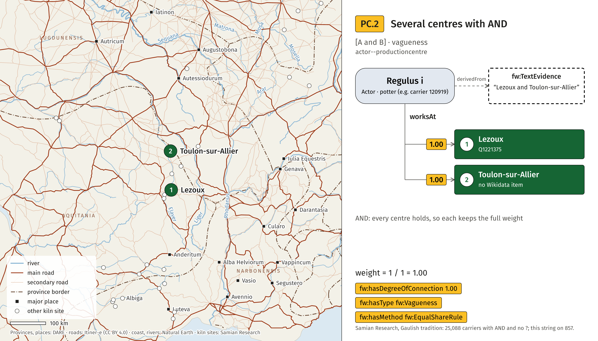
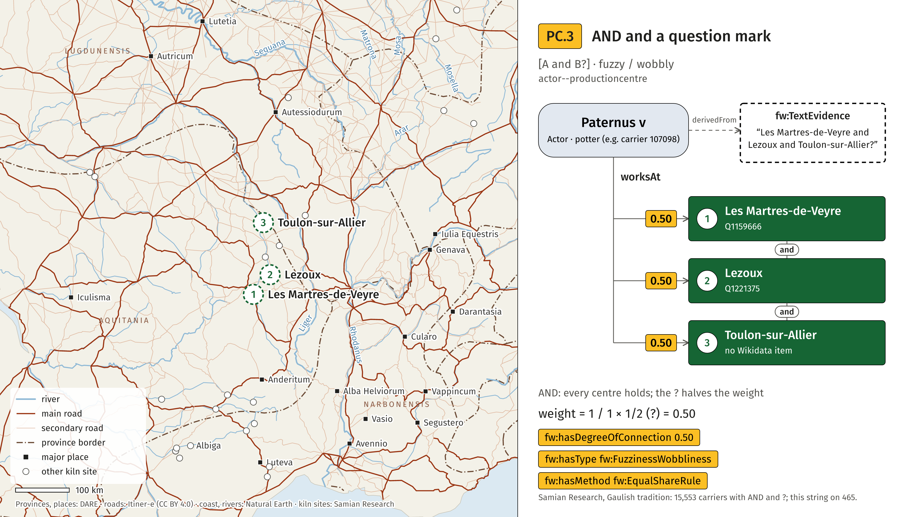
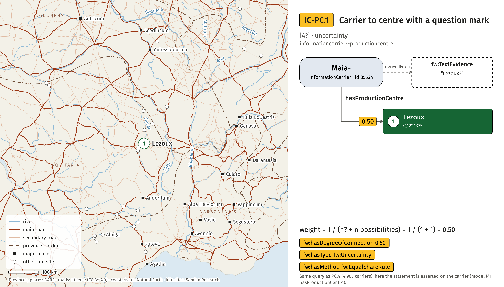

Maps, Roman
The same cases on a Roman basemap: provinces and places (DARE), roads (Itiner-e, CC BY 4.0), Latin river names.

PC.1One OR between centres
actor--productioncentre; string Pfaffenhofen or Westerndorf (Saciro iv, id 202335); weight 0.50 per statement, fw:Vagueness, fw:EqualShareRule. Data: Samian Research; figure CC BY 4.0.


PC.2Several centres with AND
actor--productioncentre; string Lezoux and Toulon-sur-Allier (Regulus i, id 120919); weight 1.00 per statement, fw:Vagueness, fw:EqualShareRule. Data: Samian Research; figure CC BY 4.0.



PC.3AND and a question mark
actor--productioncentre; string Les Martres-de-Veyre and Lezoux and Toulon-sur-Allier? (Paternus v, id 107098); weight 0.50 per statement, fw:FuzzinessWobbliness, fw:EqualShareRule. Data: Samian Research; figure CC BY 4.0.


PC.4One centre with a question mark
actor--productioncentre; string Lezoux? (Gongius, id 70139); weight 0.50 per statement, fw:Uncertainty, fw:EqualShareRule. Data: Samian Research; figure CC BY 4.0.



IC-PC.1Carrier to centre with a question mark
informationcarrier--productioncentre; string Lezoux? (Maia-, id 85524); weight 0.50 per statement, fw:Uncertainty, fw:EqualShareRule. Data: Samian Research; figure CC BY 4.0.